Beauté & coiffure · Cilaos
Chignons tressés semés de fleurs dorées, boucles de rêves et nouveaux soins, au 30B rue St Louis, au cœur du cirque.
Le salon
Belle et zen, c’est l’adresse beauté de la rue St Louis : coiffure, soins et maquillage, avec un goût marqué pour les chignons tressés, les ondulations lumineuses et les reflets miel ou cuivre.
Une histoire déjà longue : la page partage ses créations depuis 2016. Le 30 octobre 2026, Belle et zen a d’ailleurs ressorti un souvenir du 5 août 2016, une chevelure aux mèches blondes, accueilli d’un simple « Magnifique ».
« Vous êtes prêtes à avoir des boucles de rêves 😍 »— Belle et zen, en vidéo sur sa page Facebook
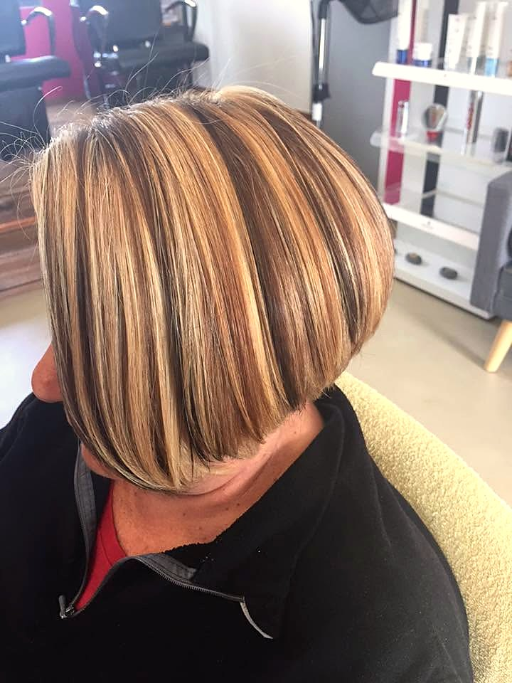
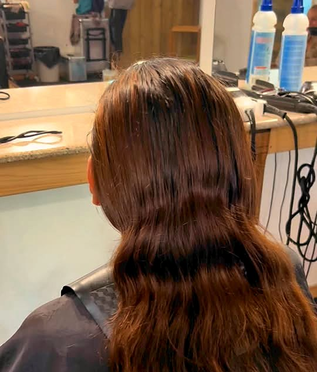
La dernière création
Publiée le 10 octobre 2026Quatre photos, quatre angles d’une même coiffure : des tresses entrecroisées qui se referment en chignon bas, des boucles libres, et de petites fleurs dorées glissées une à une. Une coiffure de fête, pensée jusque dans le moindre détail.
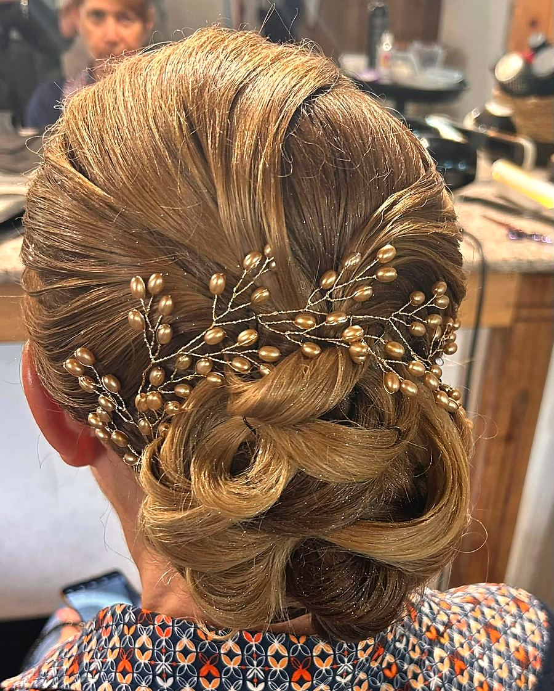
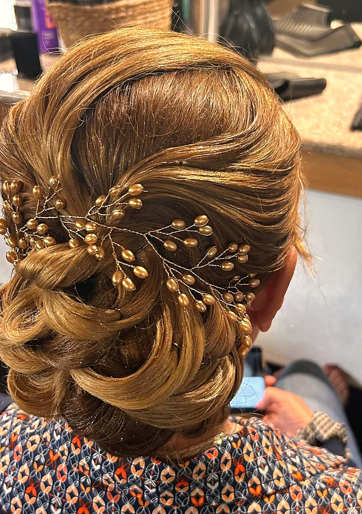
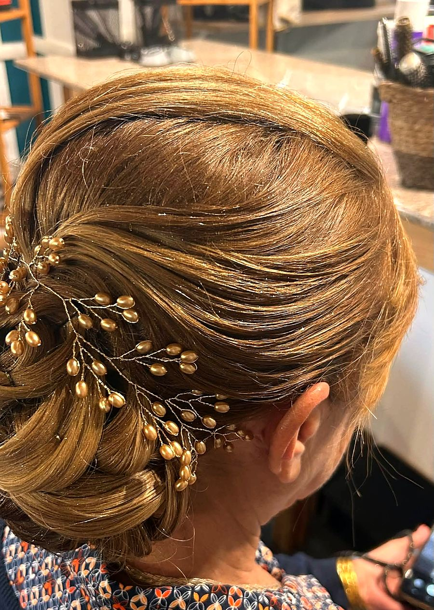
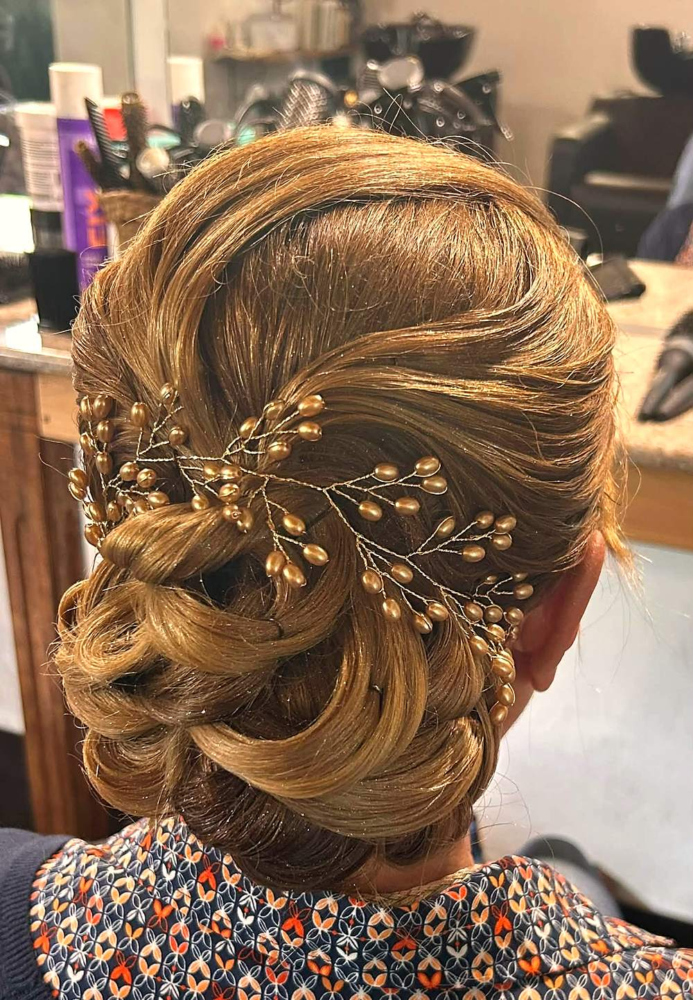
Au salon
Tresses entrecroisées, chignons bas, accessoires dorés : la coiffure qui fait les grandes occasions.
Vous êtes prêtes à avoir des boucles de rêves 😍
Du blond miel aux longueurs cuivrées : des reflets qui illuminent la chevelure.
Merci à ma fidèle cliente d’être venue tester nos nouveaux soins…
Belle et zen est référencée « Maquilleur » sur Facebook : la mise en beauté fait partie de l’univers du salon.
Voici les résultats du tirage au sort pour le soin de demain…
Un tirage au sort annoncé en vidéo sur la page.
En images
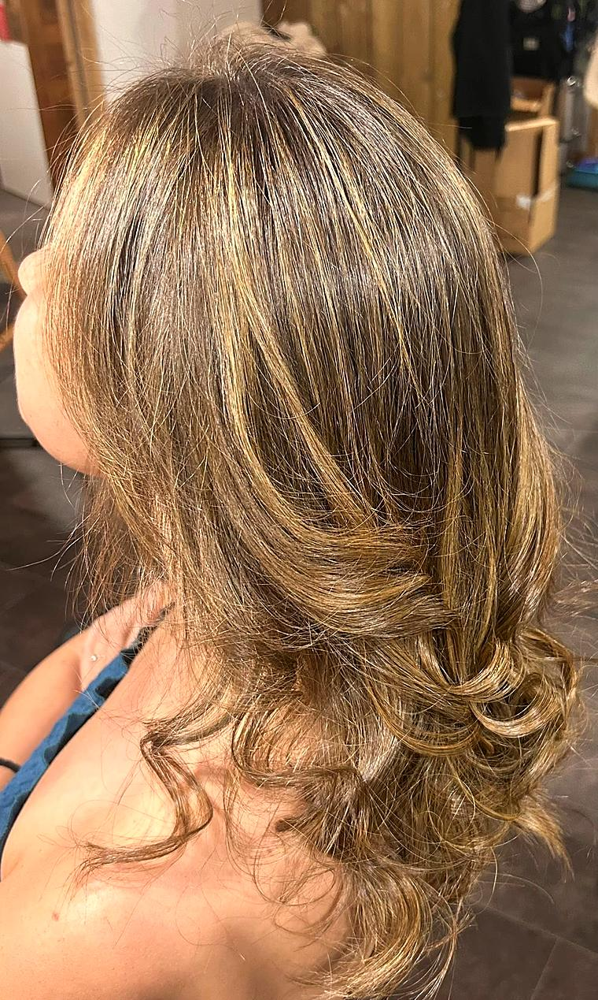
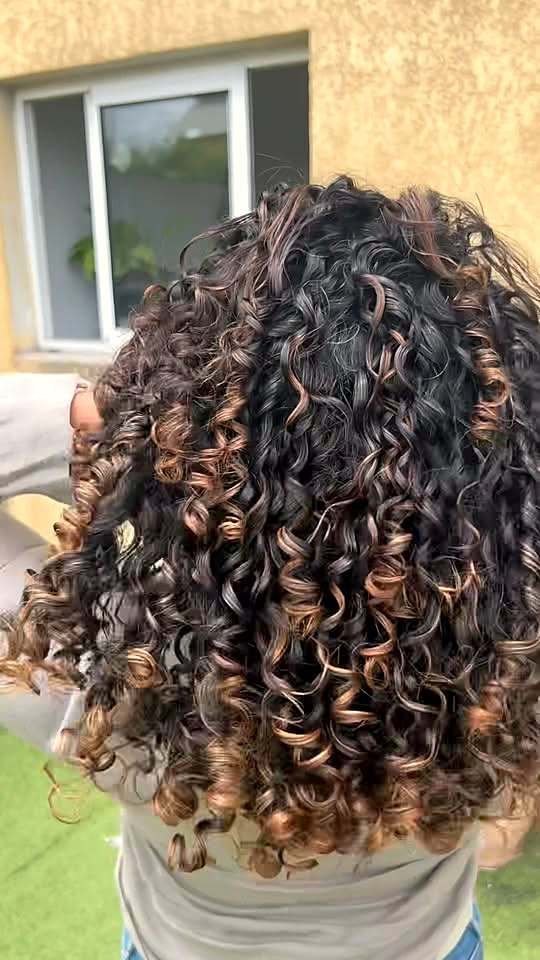
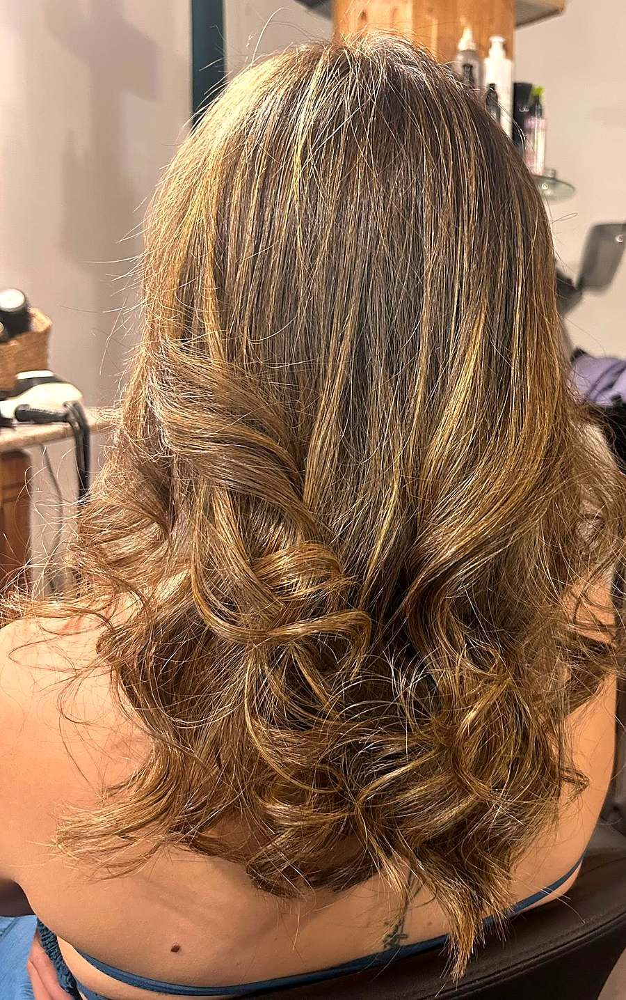
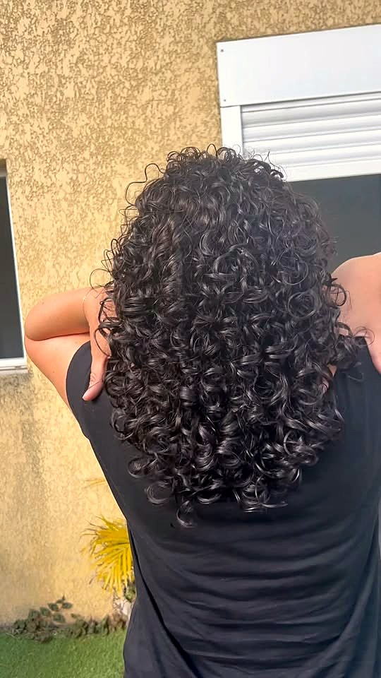
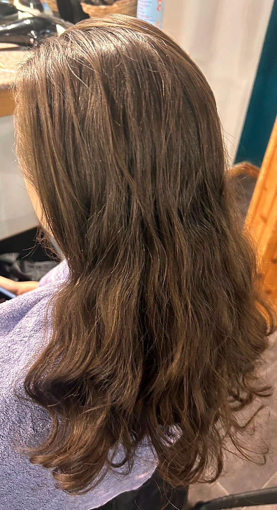
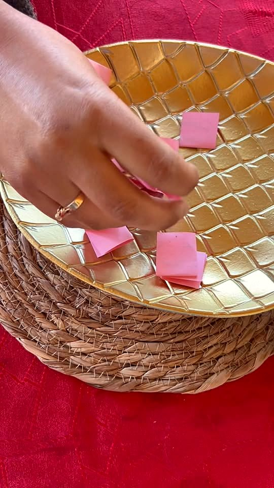
Faites glisser du doigt →
Leurs mots
Merci à ma fidèle cliente d’être venue tester nos nouveaux soins…
Belle et zen, en vidéo sur FacebookMagnifique
Gisnelle T., sous la publication du 30 octobre 2026Offrir pour Noël
Pour une maman, une sœur, une amie de Cilaos : offrez-lui le plaisir de s’installer au fauteuil, rue St Louis. Un message à Belle et zen pour composer ensemble votre carte cadeau.
Offrir une carte cadeauRendez-vous